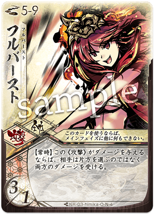

関連リソース・コミュニティ
ふるよにの世界を広げる動画、コミュニティ、ブログ記事のまとめです。
📺 動画リソース
文字だけでは分かりにくいルールや、実際の対戦の雰囲気、高度な戦略などは動画で学ぶのが近道です。
公式チャンネル
BakaFire Party
開発元であるBakaFire Partyの公式チャンネルです。 - 公式ルール解説: ゲームの基本的な流れを映像で確認できます。 - 公式大会アーカイブ: 「天音杯」や「巫鏡杯」など、最高峰の戦いを実況・解説付きで観戦できます。 - 新メガミ・新拡張PV: 新シーズンの雰囲気や新メガミのビジュアル・ボイスをチェックできます。
おすすめ解説・対戦動画
ikariのふるよにミニシアター
ブログ「ikariのふるよに図書館」と連動した解説動画が魅力です。 - ふるよにを遊ぶ前講座: ゲームを始める前に知っておきたい基礎知識や、製品の選び方などが解説されています。 - 戦術紹介: 特定の組み合わせ（三拾一捨）における考え方など、中級者へのステップアップに役立つ内容が豊富です。
素の人（しろのーと）
- 初心者向け解説: 丁寧な口調で、基本ルールから細かい処理までを解説しています。
やんはまチャンネル
北海道のボードゲームカフェ「ダイス」の店長によるチャンネル。 - 対面対戦動画: 実際のカードを使ったオフライン対戦の様子が高画質・編集付きで投稿されています。アナログで遊ぶ際の空気感や、会話のやり取りも含めて楽しめます。
動画検索ヒント
| 目的 | 推奨検索ワード | 備考 |
|---|---|---|
| 最新の対戦を見たい | ふるよに S10 (現在のシーズン番号) |
シーズンごとのカード修正に注意 |
| 大会の様子を見たい | ふるよに 大会 ふるよに 決勝 |
公式・公認大会のハイレベルな試合 |
| 特定のメガミを学ぶ | ふるよに ユリナ ふるよに サイネ |
メガミ名で検索 |
| 動き方を知りたい | ふるよに 立ち回り ふるよに コンボ |
具体的な戦術解説 |
シーズンによる違いに注意
「桜降る代に決闘を」は定期的にカード効果の修正（シーズン移行）が行われます。動画を見る際は投稿日やタイトルにあるシーズン名（S9, S10等）を確認し、現在の環境と異なる可能性がある点を留意してください。
🔗 コミュニティ & 便利ツール
ふるよにの世界をより広げるための、コミュニティや便利ツールの紹介です。 ※ リンク先は有志によって運営されています。
便利ツール
シミュレーター
- ふるよにボードシミュレーター
- ブラウザで動作する、準公式的に認められているシミュレーター（制作：ポン氏）。
- ルール処理は自動ではないため、Discord等で通話しながら操作するのが基本です。
デッキ構築
- ふるよにボードシミュレーター
- ブラウザで動作するシミュレーター。デッキ構築機能も備えています。
- ※以前の「ふるよにCLOUD」は閉鎖されました。
公式リンク
- 公式サイト
- 最新の製品情報やイベントスケジュール、コラムはこちら。
📝 コミュニティブログ (Advent Calendar)
有志による「ふるよに Advent Calendar」の記事一覧です。
2025 年
- 12/1 「ふるよに Advent Calendar 2025 ハブ」 — 魔法幼女へくとぱちゃん Link
- 12/2 「ふるよに ソロプレイ拡張モード『一柱闘戦』 デザイナーズノート」 — E*LNO(えるの) Link
- 12/3 「桜と塵の巡る先 〜〖ふるよに：桜花結晶を捉え直す〗」 — tahITEF Link
- 12/4 「三拾一捨を皆式理解する」 — かよーだ Link
- 12/5 「ふるよにメガミ『戦型フレーズ』展覧会」 — ikari Link
- 12/6 「天クラの日は続々と」 — ずきずき Link
- 12/7 「ふるよにイベント運営『裏』マニュアル」 — まぬまぬ Link
- 12/8 「忍衣秘伝の書」 — wii/閑話休題 Link
- 12/9 「カムヰちゃんをヨシヨシする方法」 — かなめ Link
- 12/10 「VRCふるよにの過去・現在・そして未来」 — ジェイド Link
- 12/11 「唐棹（本物）についてお話します」 — ねをんでした Link
- 12/12 「桜降る代に決闘を — テンポデッキ解説 —」 — しいはさん Link
- 12/13 「〖S10-1〗◯◯握るなら全員積め！インチキカード10選」 — 魔法幼女へくとぱちゃん Link
- 12/14 「〖ふるよに〗環境メガミは何が強い？考えてみました！」 — Zico Link
- 12/15 「今日から握る（な）！信頼講座」（S10-1） — えすえす Link
- 12/16 「新約徒桜取扱書」 — ヴィミラニエ@ふるよに Link
- 12/17 「あどカレ！」 — あどみぬす Link
- 12/18 「甘蛙と学ぶ、イニル・イヌルと書弓過去の使い方！」 — 甘蛙 Link
- 12/19 「初心者でもわかる！マヒルの基礎」 — タラレバ Link
- 12/20 「産声上げた いつかの未来」 — アクア244 Link
- 12/21 「シーズン10反省会」 — たしか Link
- 12/22 「闇昏千影の生きる道」 — ワタゆた Link
- 12/23 「強い山を作ろう」 — ますたー Link
- 12/24 「兜解説記事」 — いず Link
- 12/25 「ミラーマッチ座談会」 — 魔法幼女へくとぱちゃん Link
2024 年
- 12/1 「ふるよに Advent Calendar 2024 ハブ」 — 魔法幼女へくとぱちゃん Link
- 12/2 「桜降る代の審判へ」 — E*LNO(えるの) Link
- 12/3 「ふるよにソリティア決定版 シーズン9-2」 — らしょ Link
- 12/4 「いずは兜デッキを教えることができるのか」 — iZu*24 & Link
- 12/5 「兜カード概説」 — でるた Link
- 12/6 「そろそろ徒
 足りない時期じゃない？」 — ヴィミラニエ@ふるよに Link
足りない時期じゃない？」 — ヴィミラニエ@ふるよに Link - 12/7 「土下座ビートダウン社騎（ユキヒA/サリヤ）」 — しいはさん Link
- 12/8 「『ぎふよに大決戦』レポート其ノ参 — 環境分析」 — ikari Link
- 12/9 「【ふるよに】今期の握りについて」 — いちい すわ Link
- 12/10 「【ふるよに:サイネ/ユキヒ(薙傘) 解説】雪降る節季 傘を片手に」 — tahITEF Link
- 12/11 「の返しにを撃って良いのか？」 — kaseki Link
- 12/12 「キミはAlpha-Edgeを知っているか？」 — タラレバ Link
- 12/13 「異国で咲いた、可能性の大樹」 — Written_by Link
- 12/14 「ふるよにと振り返る鎚枢の歴史」 — さんでー Link
- 12/15 「薙衣の上位互換！？陰キャ鏡衣の紹介」 — あびす Link
- 12/16 「電子戦ゾーン、プラグイン！」 — たしか Link
- 12/17 「ふるよにのデッキの分類」 — 0xrgb Link
- 12/18 「【算鋸】毎期最強!?算鋸が強すぎたから解説してみた」 — ぷれ Link
- 12/19 「桜降る代に決闘を 大交流祭ヒストリーシーズン1」 — akasakihuru Link
- 12/20 「【ミコトーーク！】新涼の大交流祭の思い出トーーク！」 — ますたー Link
- 12/21 「メグミというメガミと向き合う」 — ねをんでした Link
- 12/22 「騎旗遺のじゃない方、新勾衣 グッドスタッフと言いたかったナニカの紹介」 — まぬまぬ Link
- 12/23 「ふるよに学園とミコト甘蛙の一年」 — 甘蛙 Link
- 12/24 「【企画】ふるよに安全網！記事無しペアを救おう会」 — ikari Link
- 12/25 「ちょっとこっちは本読んでるんで邪魔しないでもらっていいですか？」 — 魔法幼女へくとぱちゃん Link
{kind=link}
2023 年
(一部抜粋、詳細はAdvent Calendarを参照) 1. 12/1 「ふるよに Advent Calendar 2023 ハブ」 — 魔法幼女へくとぱちゃん Link ...（他記事はバックナンバーとして省略または必要に応じて追記）